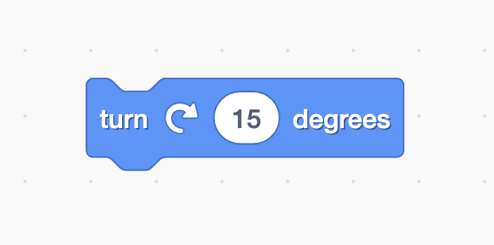
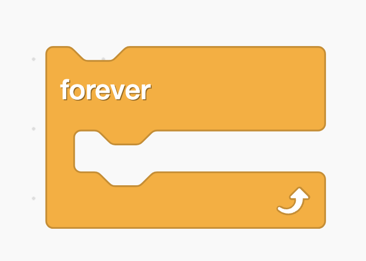
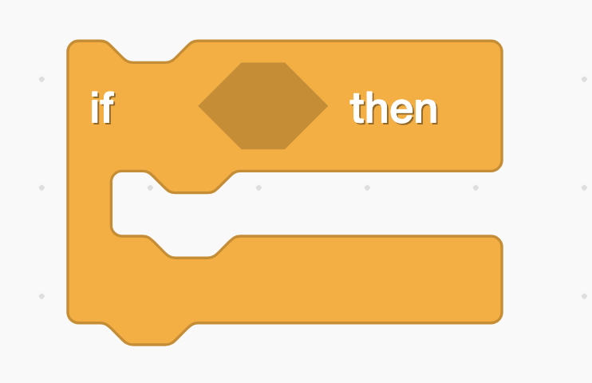
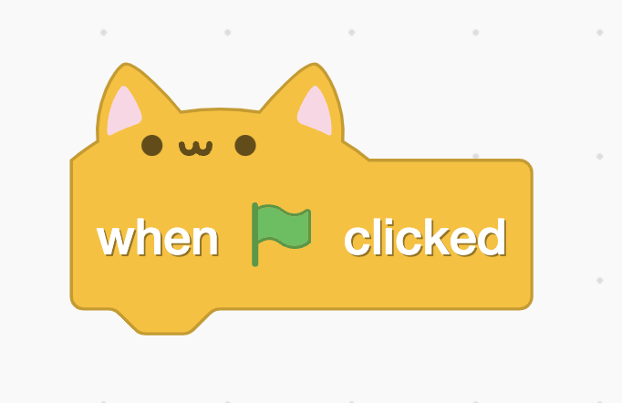

Inroduction to Scratch
Learn how to code the simple way
In this course you will learn the basics of the programming language called scratch. Throughout this course you will be making multiple games such as: a maze game, a shooter game, and a flying game. In the course you will learn multiple programming tricks and you will get to know many famous scratchers and their works along the way.

The Scratch interface
The scratch interface is pretty straitforward, there is a sprite pane which contains all the objects in your scene view, a code area where you can drag in blocks from the block palette and a sound and costume tabs. At the top of your project there is a "Save Now" button a few other options. to run your scripts click on the green flag at the top of the stage and on the stop sign to stop the project again. To create a new Sprite (Object) click on the cat face with a plus and select one from the scratch sprite library, or hover to get the whole menu. The same thing for the stage. At the top of the sprite pane are the properties of the sprite you're currently looking at such as its visibility status or its position on the screen.

Source: Scratch Wiki
The basics
You will need the blocks I will show you now for basically the whole time you will be doing scratch.
Move-block
Function
The move block moves an object(sprite) in the direction it is facing. So if a red square had a direction of 90 degrees the move block would move it right. Note that all sprites start facing 90 degrees, not 0, this can cause problems if you forget about this as many people often do. The steps input is not how many jumps the sprite will make but how many pixels it will travel. Some people can get that wrong and are really frustrated. The scratch team should have called the move block move pixels instead of move steps.
location
The move block can be found at the very top of the motion category.

Turn-block
Function
the turn block's function is pretty easy to understand, the block turns the corresponding sprite a certain amount of degrees, note that the amount can be negative.
Location
The turn block is located right under the move block in the motion category.
Forever
Function
The forever block is a loop, it executes the commands inside it over and over again, but is not run forever, it runs until the project stops, and there are ways to stop forever loops but those are details and this course is an intro so you don't have to worry about that now. Common ways of using forever loops are counters, physics, and motion.
Location
The forever loop is located in the middle of the controls category orange-brown blocks.
If conditional
Function
If conditions are used to check if something is true or false. If the input is true then the command in the if is executed. Scratch has many conditions such as key()pressed?. There are also operator conditions such as ()=() these can be used to compare numbers or variables, we'll go over those in a later tutorial. All conditions are are angular and therefore easy to recognize among the other types of blocks.
Location
The if and if else blocks are located right below the forever loop in the controls category.
When Flag Colicked
Function
The when flag clicked block is probably the block that every scratch program contains, because this block tells the program what to do when the green flaf is clicked, the start button in other words. Once the flag is clicked everything under the when flag clicked block will run. This block is a so called hat block which means it automatically runs all scripts under it when the action(in this case the green flag is clicke) has occured.
Location
The when flag clicked block can be found as the first block in the events category(yellow blocks).
Note that I have scratch addons installed so the block you will see will not have cat ears.
Conclusion
Here we've touched only five blocks to find out more continue to the next lesson in the course.